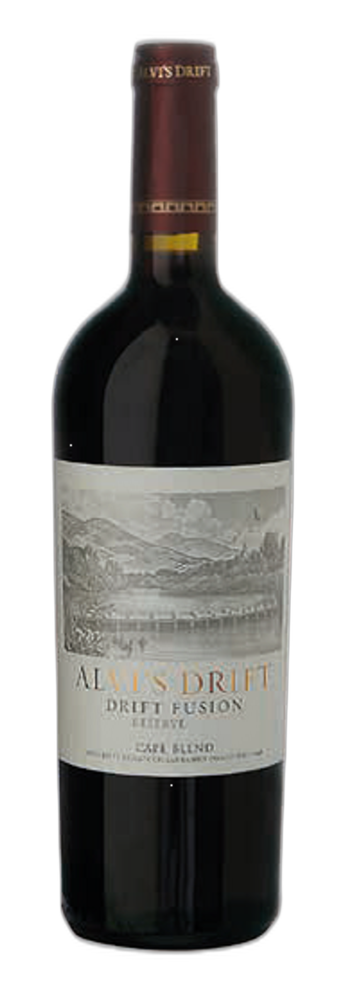

Alvi's Drift Reserve Drift Fusion

Een Zuid-Afrikaanse reserveblend met een Double Platinum en een Grand Cru National Champion Best in Class bij de NWC SA Top 100 Wine Awards op zak — dat zijn onderscheidingen die bij dit label aantoonbaar horen. Duizenden Vivino-stemmers en critici bevestigen dat beeld. De aanbieding steekt duidelijk af bij wat elders in Europa voor dezelfde fles gevraagd wordt.
Alvi's Drift Reserve Drift Fusion is voor €12,79 verkrijgbaar, terwijl een Belgische webshop dezelfde wijn voor €18,15 aanbiedt — een merkbaar verschil dat als bruikbaar ijkpunt dient voor de Europese markt. Critici plaatsen dit label stevig in het goede-tot-sterke kwaliteitssegment, met een gemiddelde van 87/100 op Wine-Searcher. De enige voorbehoud: de jaargang van de aangeboden fles staat niet vermeld. De bekroonde editie betreft de 2022-jaargang; of dat precies de fles is die je koopt, is niet zeker. De staat van dienst van het label is consistent genoeg om de prijs als scherp te beschouwen, maar wie zekerheid over de jaargang wil, doet er verstandig aan dat even na te vragen.